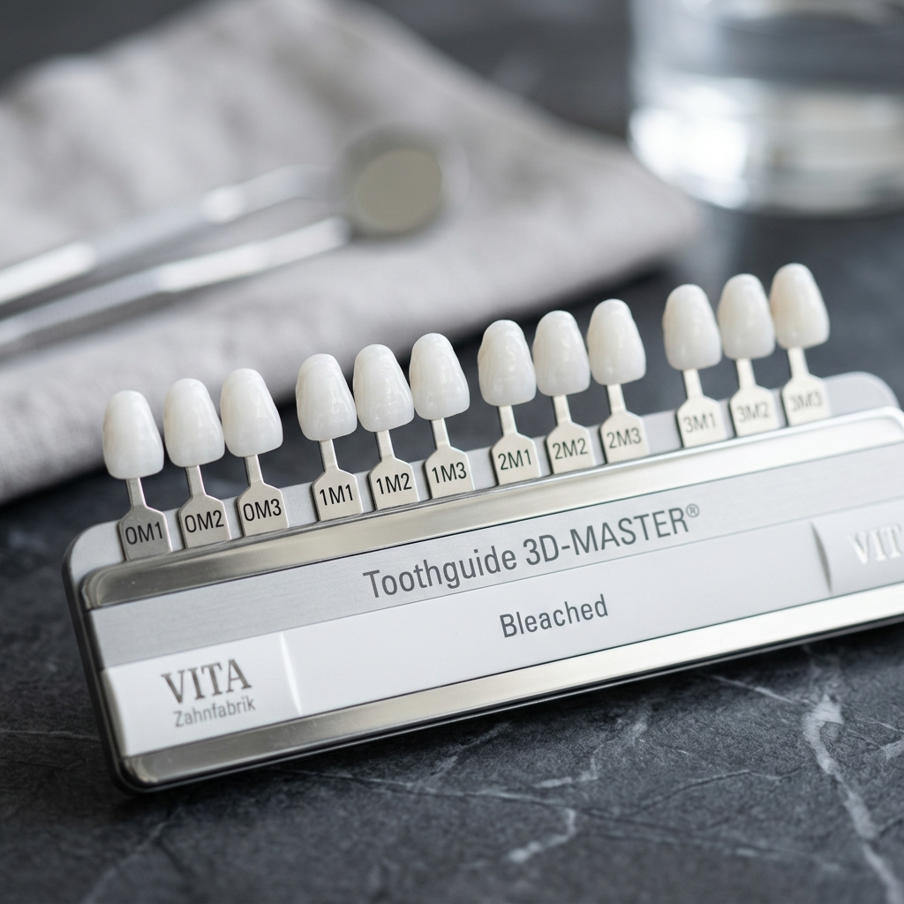

Um sorriso branco e brilhante é o desejo de quase todos os pacientes. Com a crescente exposição nas redes sociais, a busca pelo clareamento dental disparou. No entanto, com a popularização, surgiram diversas receitas caseiras milagrosas na internet e muitas dúvidas. Afinal, clareamento dental realmente funciona? Faz mal aos dentes?
Abaixo, esclarecemos os principais mitos e verdades sobre esse procedimento.
1. Clareamento dental enfraquece os dentes?
MITO! Essa é a dúvida mais comum. Os géis clareadores profissionais (peróxido de hidrogênio ou de carbamida) agem apenas nos pigmentos que causam o escurecimento do dente. Eles quebram as moléculas das manchas através de um processo de oxidação, sem alterar a estrutura mineral (o cálcio) do esmalte dentário. Se feito sob supervisão do dentista, não enfraquece o dente.
2. Receitas caseiras com carvão ou bicarbonato clareiam os dentes?
MITO (E PERIGOSO)! Escovar os dentes com carvão ativado, bicarbonato de sódio ou limão não clareia o dente. O que esses produtos abrasivos fazem é "lixar" a camada superficial do esmalte. Isso pode dar a falsa impressão inicial de dentes mais limpos, mas na verdade está desgastando irreversivelmente a camada protetora do dente. Com o tempo, o dente ficará mais sensÃvel, fraco e até mais amarelado, pois a dentina (camada interna amarela) ficará mais exposta.
3. Clareamento causa sensibilidade?
VERDADE. Durante o processo de clareamento, é comum ocorrer uma sensibilidade transitória. O gel abre temporariamente os poros do esmalte para retirar as manchas, o que deixa o dente sensÃvel ao frio e calor. Porém, essa sensibilidade desaparece de 24 a 48 horas após a aplicação. Hoje existem protocolos modernos com géis dessensibilizantes que reduzem a quase zero o desconforto.
4. Posso tomar café durante o tratamento?
MITO (Obrigado Ciência!). Por muito tempo, dizia-se que era proibido consumir café, vinho ou molhos escuros durante o tratamento. Estudos recentes comprovaram que a dieta não interfere no resultado final do clareamento se você usar géis modernos. O que pedimos é moderação e boa higiene (escovar os dentes ou enxaguar a boca com água após beber café) para não manchar o dente enquanto os túbulos estão abertos.
5. O resultado é para sempre?
MITO. Nossos dentes continuam envelhecendo e sendo expostos a pigmentos ao longo da vida. O resultado do clareamento dura, em média, de 1 a 3 anos. Após esse perÃodo, os dentes podem começar a escurecer novamente, e será necessária uma sessão de "retoque". Manter uma boa higiene e fazer limpezas profissionais regulares ajudam a prolongar o resultado.
Quais são os Tipos de Clareamento Profissional?
- Clareamento a Laser / Consultório: Realizado em sessão de aproximadamente 1 hora. O dentista aplica um gel em alta concentração (protegendo a gengiva). É ideal para quem busca resultados imediatos.
- Clareamento Caseiro Supervisionado: O dentista confecciona moldeiras de silicone sob medida. Você aplica o gel em menor concentração em casa, usando a moldeira diariamente por algumas horas, durante 2 a 3 semanas.
- Clareamento Conjugado: É a associação das duas técnicas (consultório + caseiro). É o "padrão ouro", pois garante resultados mais rápidos e duradouros.
Pronto para iluminar seu sorriso?
Realizamos clareamento dental seguro e com resultados incrÃveis. Fale conosco para avaliar qual a melhor técnica para o seu caso.
Saber Mais Sobre Clareamento